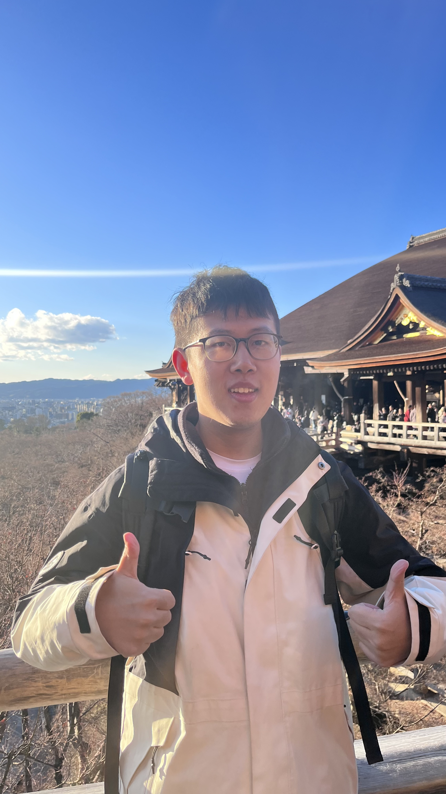

Guangzhi Wang 王广智Ph.D. Candidate
Institute of Data Science
|
 |
Biography
I'm currently a 4th year (2020 - 2024) PhD student at National University of Singapore, advised by Prof. Mohan Kankanhalli.
I am affiliated at both school of computing (SoC) and institute of data science (IDS).
Before that, I obtained my B.Eng. degree of Computer Science from Zhejiang University in June, 2019.
My research interests include Multimodal Large Language Models, human-centric scene understanding, vision and language and knowledge transfer.
I am looking for full-time / intern positions for research /applied research from 2024. Feel free to contact me if you are interested!
Preprints
|
What Makes for Good Visual Tokenizers for Large Language Models?
Guangzhi Wang, Yixiao Ge, Xiaohan Ding, Mohan Kankanhalli Ying Shan |
|
Mining Conditional Part Semantics with Occluded Extrapolation for Human-Object Interaction Detection
Guangzhi Wang, Yangyang Guo, Mohan Kankanhalli |
|
SEED-Bench: Benchmarking Multimodal LLMs with Generative Comprehension
Bohao Li*, Rui Wang*, Guangzhi Wang*, Yuying Ge, Yixiao Ge, Ying Shan |
Publications
|
Text to Point Cloud Localization with Relation Enhanced Transformer
Guangzhi Wang, Hehe Fan, Mohan Kankanhalli AAAI Conference on Artificial Intelligence (AAAI) 2023 |
|
Distance Matters in Human-Object Interaction Detection
Guangzhi Wang, Yangyang Guo, Yongkang Wong, Mohan Kankanhalli ACM International Conference on Multimedia (ACM MM) 2022 |
|
Chairs Can be Stood on: Overcomming Object Bias in Human-Object Interaction Detection
Guangzhi Wang, Yangyang Guo, Yongkang Wong, Mohan Kankanhalli European Conference on Computer Vision (ECCV) 2022 |
|
Semantic-aware Triplet Loss for Image Classification
Guangzhi Wang, Yangyang Guo, Yongkang Wong, Mohan Kankanhalli IEEE Transactions on Multimedia (TMM) 2022 |
|
Relation-aware Compositional Zero-shot Learning for Attribute-Object Pair Recognition
Ziwei Xu, Guangzhi Wang, Yongkang Wong, Mohan Kankanhalli IEEE Transactions on Multimedia (TMM) 2021 |
|
Multi-source Distilling Domain Adaptation
Sicheng Zhao*, Guangzhi Wang*, Shanghang Zhang*, Yang Gu, Yaxian Li, Zhichao Song, Pengfei Xu, Runbo Hu, Hua Chai, Kurt Keutzer Proceedings of the AAAI Conference on Artificial Intelligence (AAAI) 2020 |
Teaching
NUS CS5242 Neural Network and Deep Learning
NUS CS4243 Computer Vision and Pattern Recognition
Internship Experience
Research Intern, Microsoft Research, Redmond, Jul. 2023 -- Sep. 2023
Research Intern, Tencent, PCG, Beijing, Jan. 2023 -- Jun. 2023
HikVision Research Institutue, Hangzhou, Oct. 2019 -- Dec. 2019
Algorithm Intern, Didi Chuxing, Beijing, Nov. 2018 -- Mar. 2019
Services
Invitated Reviewer: ECCV, CVPR, ICCV, AAAI, ToMM, TMM, ICIP, Knowledge-Based Systems
© Guangzhi Wang | Last updated: Oct. 2023